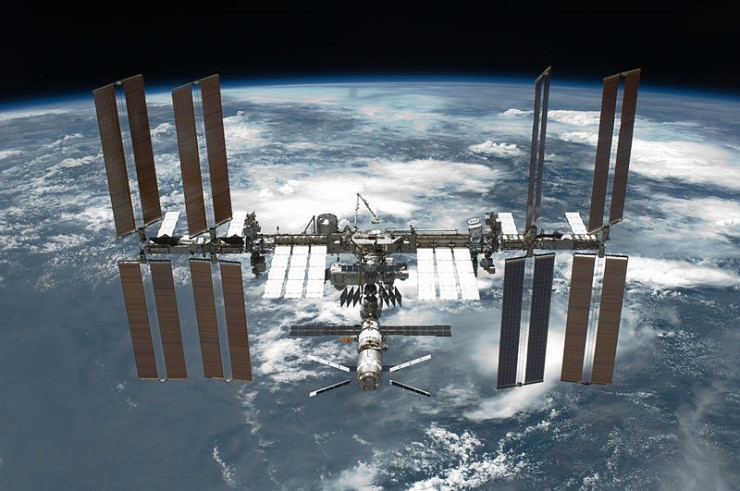

ISS 우주정거장
첫 등장 때는 우주 쓰레기의 피해로 이곳 저곳 망가진 상태였다.
스톤은 모르고 그냥 스쳐 지나갔지만 전기 배선에서 스파크가 튀던 상태였고 스톤이 응답 없는 통신을 하다 경고음을 듣고 주위를 돌려봤을 땐 이미 화재로 번져 있었다.
그리하여 스톤이 다급하게 소유즈 모듈에 끼어들어가 모듈을 분리했지만, 대피 당시에 펼쳤던 낙하산이 ISS의 본체에 얽혀 있던 상황이였다.
결국 스톤이 선외 활동으로 낙하산 줄을 소유즈 모듈에서 분리하는 데는 성공했지만 그 도중 90분의 시간 간격을 넘어 다시 돌아온 우주쓰레기들이 덮치면서 폭발했다.
( 우주 공간이라는 특성상 소유즈 모듈의 진동 이외의 ISS 자체가 일으키는 폭발음이나 진동이 전혀 느껴지지 않는다 )